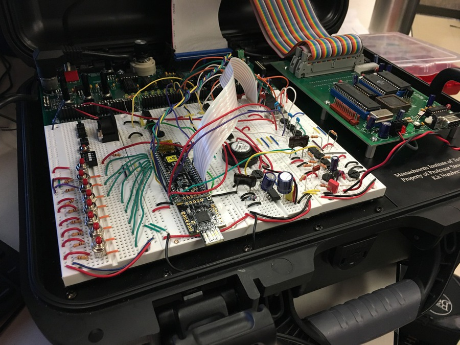
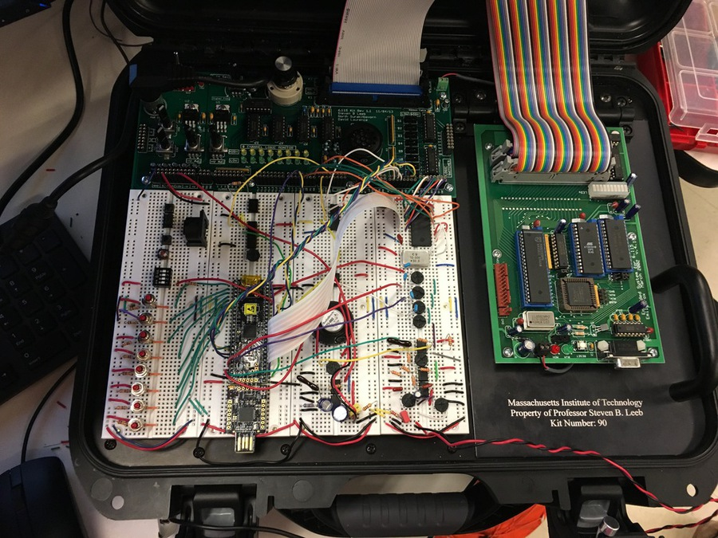
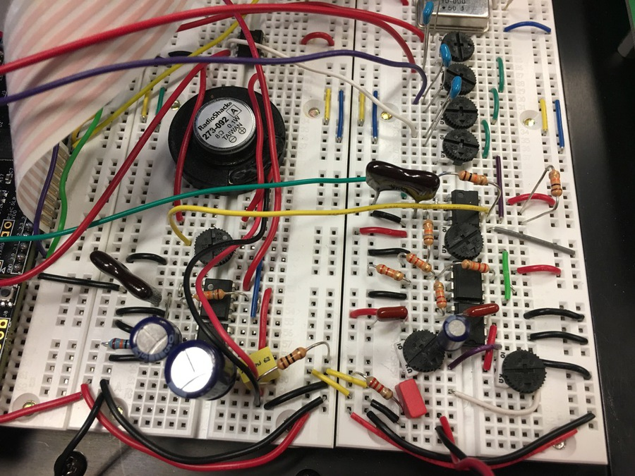
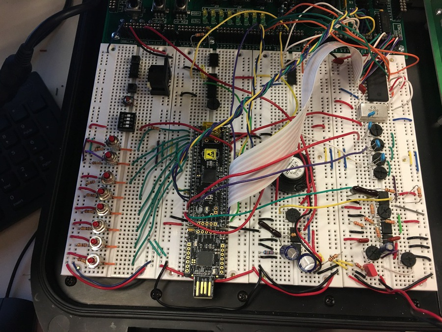
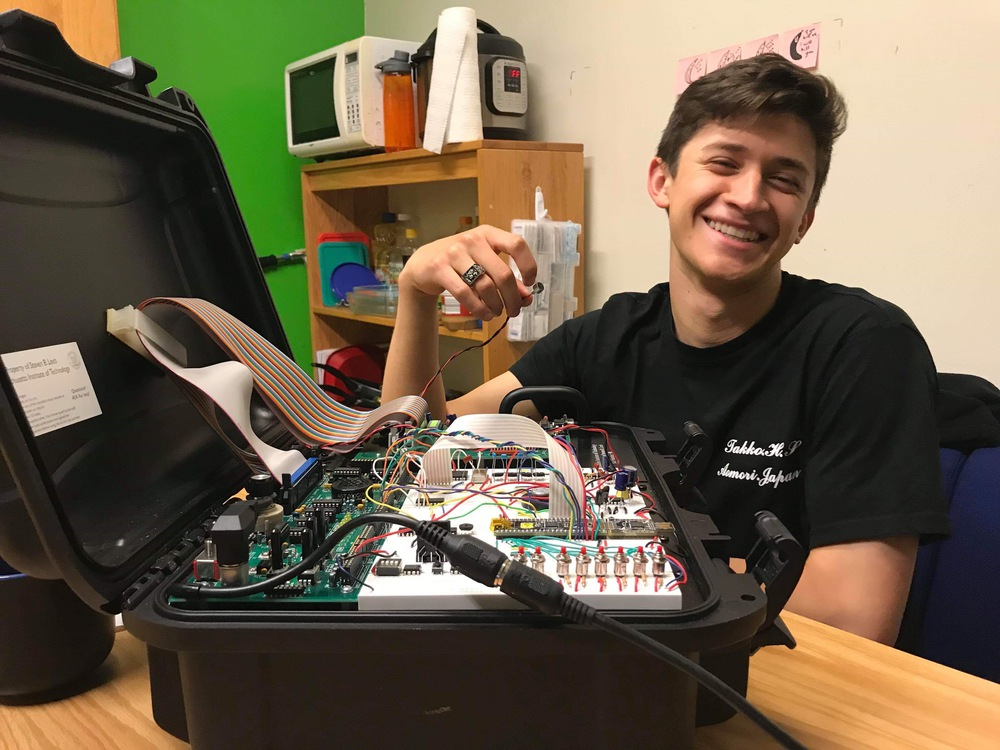
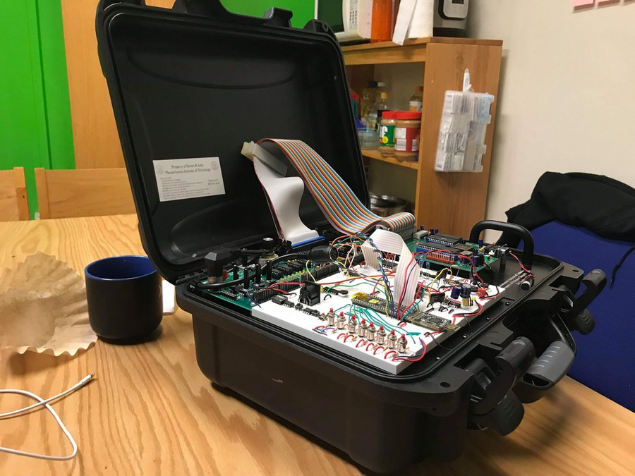

Below there are some of the pictures of the harmonizer final product. The process is well documented in the linked pdf. Download PDF
Here's a short video of my project, but honestly I wasn't able to do it justice. Also it works better with things with simpler sine waves. It worked great with a whistle as the input, but unfortunately like an idiot I didn't record anything else. Oh well. A learning oportunity to document better.





